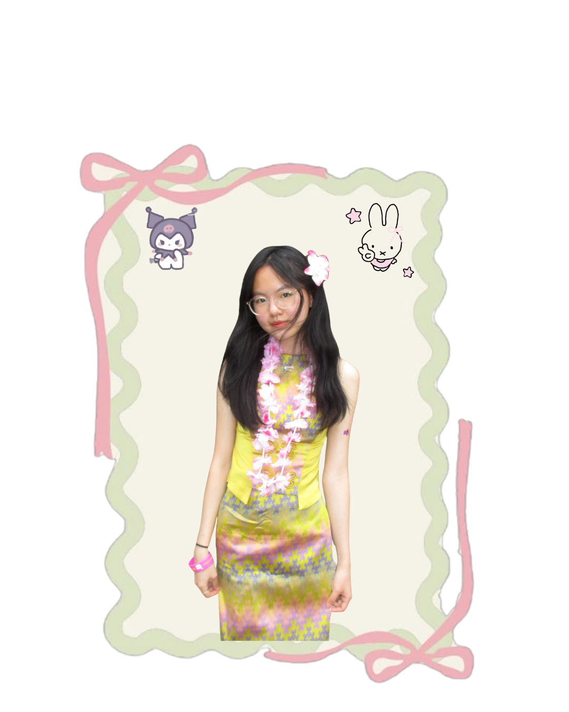

Name: Pyae Phoo Min
Terpconnect Location: https://www.terpconnect.umd.edu/~pmin1/terpconnect_static_site/
GitHub Location: https://yvonnestaticsite.onrender.com/

Hi! I'm Yvonne
I'm a junior studying Computer Science at the University of Maryland with a strong interest
in Software Engineering and UI/UX Design. I love bridging the gap between clean code and intuitive
user experiences, and I've built several projects that combine both development and interface
design.
Outside of tech, you can usually find me experimenting with new recipes or out shopping. I also love
graphic design and I'm the graphic design lead for the Myanmar Cultural Association at UMD!
My projects
| Project | Technology | Description |
|---|---|---|
| YouTube Summarizer | PHP, Gemini, Python | Summarizes YouTube videos using AI. |
| TerpBooth | HTML, CSS, JavaScript | A photo booth web application. |
| Carrot Dash | Java | A video game where a bunny jumps to avoid obstacles. |